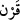
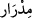
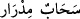
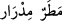

evlerinin altından ırmaklar akıttığımız nice nesilleri helâk ettik. Biz onları,
günahları sebebiyle helâk ettik ve onların ardından başka nesiller yarattık.
“Görmediler mi, onlardan önce nice nesiller yok ettik.” Önceki âyetlerde Allah
Teâlâ müşriklerin hakdan yüz çevirme, âyetleri yalanlama ve Kur’an ile alay etme gibi
kabahatlerini zikrettikten sonra şimdi onlara öğüt veriyor. Geçmişte aynı türden hataları
işleyen toplumların akıbetini onlara hatırlatıyor.
“Görmediler mi?” ifadesi, kesinlikle bildiklerini, duyduklarını vurgulamak içindir.
Burada kasdedilen Mekkeli inkarcılardır. Bu takdirde cümlenin anlamı şöyledir:
“Mekkeliler, kendilerinden önce gelen inkârcı toplumlardan kalan kalıntılara bakarak ve
onların başlarına gelen felâketleri işiterek inkârcılığın akıbetini bilmiyorlar mı?
“Onlardan önce” ifadesinden maksat, Mekke halkını yaratmadan önce ya da onların
zamanından önce” demektir.
“__WORD__” lafzı, aynı asırda yaşayan insanları ifade eder. Zaman olarak birbirlerine yakın
oldukları için bu lafız kullanılmıştır. Nitekim Rasûlullah (s.a.): “Zamanların en
hayırlısı benim içinde bulunduğum asırdır. Sonra onları takip edenler ve daha sonra
da onları takip edenlerdir.”[88] buyurmuştur. İlk asırla sahabe, ikincisi ile tâbiîn,
üçüncüsü ile de tebe-i tâbiîn kasdedilmiştir.
“Karn” kelimesinin seksen, yetmiş, altmış, kırk, otuz ya da yüz yıllık zaman mânâsına
geldiği de söylenmiştir. Bu durumda “nice asırları yok ettik.” demek “nice asırlarda
yaşayan insanları yok ettik.” demektir. Çünkü, zamanın kendisi, helâkin mevzuu değildir.
“Hem onlara yeryüzünde size vermediğimiz şeyleri vermiştik.”
Bu cümle ile inkârcıların niçin helâk edildikleri ve yok edilme sebeplerinin tafsîlâtı
beyan edilmeye başlanmaktadır. Bu ise sözün başında mukadder bir soruya
bağlanmaktadır. Sanki: “Bu nasıl oldu?” diye sorulmuş ve cevaben: “Onları yeryüzünde
yerleştirdik, size vermediğimiz nimetleri onlara verdik.” denilmiştir. Bir şeyi yeryüzüne
yerleştirmek; onu yerleştirildiği yerde sabit kılıp ayaklarını sağlamlaştırmak, bunun için
gerekli ihtiyaçlarını karşılamaktır.
“Ve göğü de” yani, yağmuru veya bulutu “üzerlerine bol bol boşaltmıştık.” “__WORD__”
kelimesi kök olarak sütün bolca akması anlamındadır. “__WORD__” ve “__WORD__”
denildiği zaman ihtiyaç zamanında yağmurun peşpeşe bolca yağdığını ifade eder.”
“Ve ırmakları evlerinin dibinden akar kılmıştık.” Nehirleri, onların ağaçlarının,
evlerinin ve saraylarının dibinden akıtmıştık.
Mânâ: Biz Mekke halkına vermediğimiz şeyleri onlara verdik. Onları iri yapılı kıldık,
uzun ömür verdik, bol dünya malı verdik. Bütün bunlara rağmen yine de nankörlük ve
isyanda bulundular.
“Fakat günahlarından ötürü onları helâk ettik.” Her asırdaki isyankârlar işledikleri
kendilerine mahsus günahlardan ötürü helâk edildiler. Onlara verilen bunca nimet ve
imkân onları kötü akıbete uğramaktan kurtaramadı. Nitekim Mekke halkı ve bunlardan
sonra inkârcılığı meslek edinenler de onların başına geldiği gibi azâba